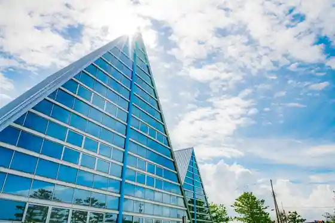
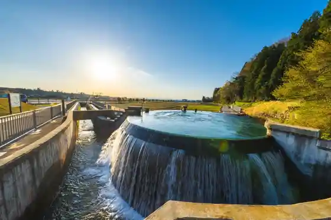
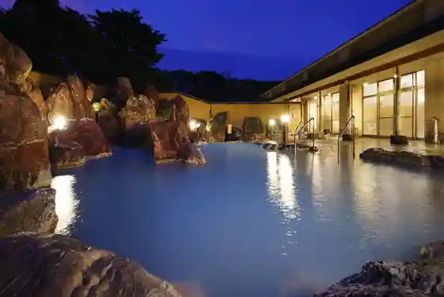
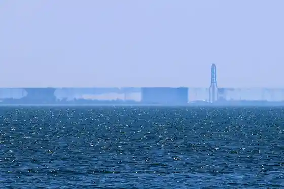

Uozu Maibotsu Hayashi Museum
Uozu, Toyama · 0765-22-1049 · Official / source link

Higashiyama Ento Bunsui So
Uozu, Toyama · Official / source link

Kintaro Onsen (Uozu)
Uozu, Toyama · 0765-24-1220 · Official / source link

Shinkiro (Shinkiro Tembo Chiten)
Uozu, Toyama · 0765-22-1049 · Official / source link

Umi no Eki Shinkiro
Uozu, Toyama · 0765-24-4301 · Official / source link
Miraju Land
Uozu, Toyama · 0765-24-6999 · Official / source link
Uozu Aquarium
Uozu, Toyama · 0765-24-4100 · Official / source link
Komasa Sushi
Uozu, Toyama · 0765-22-5383 · Official / source link
Uozu Maru Shokudo
Uozu, Toyama · 0765-32-5831 · Official / source link
Tasuke Sushi
Uozu, Toyama · 0765-24-7357 · Official / source link
Kome Sodo Hassho no Chi
Uozu, Toyama · 0765-23-1045 · Official / source link
Kitayama Kosen Niemon Ryokan (Kyumei : Niemon Ie)
Uozu, Toyama · 0765-33-9222 · Official / source link
Shinkawa Bunka Horu
Uozu, Toyama · 0765-23-1123 · Official / source link
Sushi Daimon
Uozu, Toyama · 0765-32-5868 · Official / source link
SPA BALNAGE (Hotel Guranmiraju)
Uozu, Toyama · 0765-24-4411 · Official / source link
ZAXFOX Kashi Kenkyusho /ZAXFOX Kaunta
Uozu, Toyama · Official / source link
KANATA WINERY
Uozu, Toyama · 0765-55-2027 · Official / source link
Mizu Dango Senmonten Tokichi
Uozu, Toyama · 0765-55-2219 · Official / source link
Shinkiro Rodo
Uozu, Toyama · Official / source link
Bai Meshi
Uozu, Toyama · Official / source link
Daikokuya Sushiten
Uozu, Toyama · 0765-24-2888 · Official / source link
Katagai Yama no Shu Campground
Uozu, Toyama · 0765-32-7755 · Official / source link
Matsukura Castle Ruins
Uozu, Toyama · 0765-23-1045 · Official / source link
Nakajima Orchard
Uozu, Toyama · 0765-22-7274 · Official / source link
Etchu Uozu Shiomon Ya Hamaoka Umi no Sachi
Uozu, Toyama · 0765-22-0954 · Official / source link
Tsuji Wakuwaku Land
Uozu, Toyama · 0765-24-7447 · Official / source link
Uozu Castle Ruins
Uozu, Toyama · 0765-23-1045 · Official / source link
Ariso Domu
Uozu, Toyama · 0765-23-9800 · Official / source link
Nagisa Haku Uozu Maru (STAY at WHARF UOZUMARU)
Uozu, Toyama · 0765-24-0068 · Official / source link
Hora Sugi
Uozu, Toyama · 0765-23-1025 · Official / source link
Aizen Me Experience (Aizen Me Ya aiya)
Uozu, Toyama · Official / source link
Kekachi Yama
Uozu, Toyama · 0765-23-1025 · Official / source link
Uozu Machinaka Rentaru EV (Toku Ru)
Uozu, Toyama · 0765-55-2500 · Official / source link
Hana Forest · Tenjin Yama Garden
Uozu, Toyama · Official / source link
Kitayama Kosen
Uozu, Toyama · 0765-22-1200 · Official / source link
Uozu Rentasaikuru (Mirakuru)
Uozu, Toyama · Official / source link
BOBO.
Uozu, Toyama · 0765-32-4156 · Official / source link
KININAL
Uozu, Toyama · 0765-24-4014 · Official / source link
Genshichi
Uozu, Toyama · 0120-224-857 · Official / source link
Uozu Rekishi Minzoku Museum
Uozu, Toyama · 0765-31-7045 · Official / source link
Tenjin Yama Castle Ruins
Uozu, Toyama · 0765-23-1045 · Official / source link
Uozu Shrine
Uozu, Toyama · 0765-24-8883 · Official / source link
Mukaisanchi no Farm (Buruberii Kari Taiken Sono)
Uozu, Toyama · Official / source link
Workshop Yamasen Tsuji Hotoke Dan
Uozu, Toyama · 0765-22-2094 · Official / source link
Shinkawa Manabi no Mori Tenjin Yamako Ryu Kan
Uozu, Toyama · 0765-31-7001 · Official / source link
UO! JAZZ 2026 (Jantokoi Uozu Festival)
Uozu, Toyama · 0765-22-1200 · Official / source link
NOROSHI FARM no Chokubai Tokoro
Uozu, Toyama · 0765-77-0004 · Official / source link
Shoei Do Uozu Issho Iori
Uozu, Toyama · 0765-24-2525 · Official / source link
Uozu Shuzo
Uozu, Toyama · 0765-22-0134 · Official / source link
Mukaisanchi no Taiyaki
Uozu, Toyama · 080-5788-7907 · Official / source link
Ozaki Kamaboko Kan
Uozu, Toyama · 0765-24-6666 · Official / source link
Dai Town Kaigan Park
Uozu, Toyama · Official / source link
Masu Ho Castle Ruins
Uozu, Toyama · 0765-23-1045 · Official / source link
Sogagaku
Uozu, Toyama · 0765-23-1025 · Official / source link
Uozu Ekimae Inshokutengai (Kaki no Kiwari Ri "
Uozu, Toyama · Official / source link
Uozu General Park (Mira Park)
Uozu, Toyama · 0765-24-6999 · Official / source link
Uozu Momoyama Sports Park
Uozu, Toyama · 0765-22-0077 · Official / source link
Man Lighthouse
Uozu, Toyama · 0765-23-1045 · Official / source link
Hebiishi
Uozu, Toyama · 0765-23-1025 · Official / source link
Aizen Me Ya aiya
Uozu, Toyama · Official / source link
(infinity~mirage) Purojiekuto & Nazotoki Sutanpurarii
Uozu, Toyama · 0765-22-1049 · Official / source link
Uozu no Kombu Shime
Uozu, Toyama · Official / source link
Masu no Sushi
Uozu, Toyama · Official / source link
Otomo Iemochi no Kahi
Uozu, Toyama · 0765-23-1045 · Official / source link
Hotaruika
Uozu, Toyama · Official / source link
Kitayama Castle Ruins
Uozu, Toyama · 0765-23-1045 · Official / source link
Mochitsuki Experience (Genshichi)
Uozu, Toyama · 0120-224-857 · Official / source link
Uozu Yakusho
Uozu, Toyama · 0765-23-1118 · Official / source link